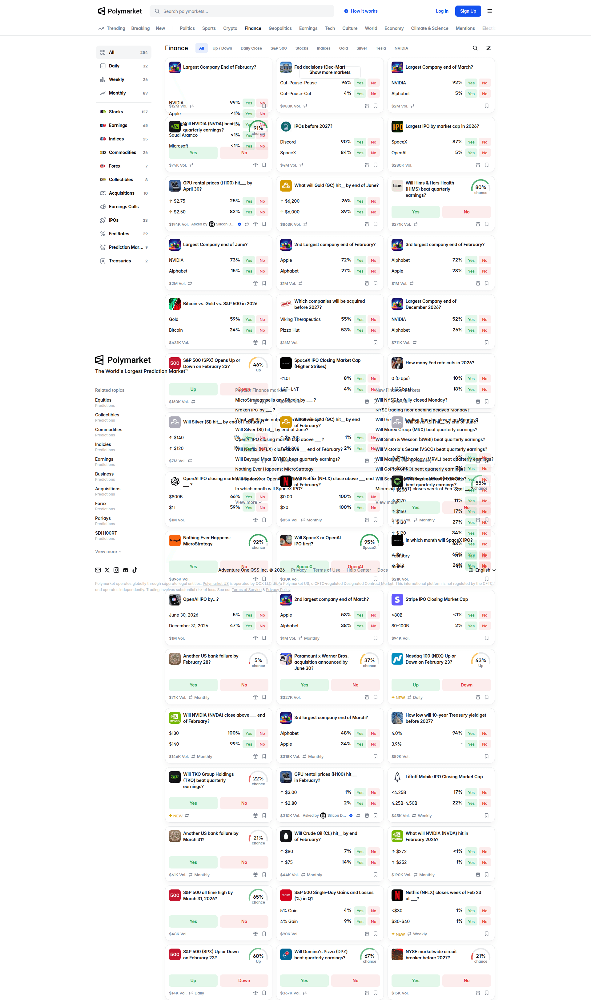

Polymarket Card Redesign Improvement Notes
Current issue: the existing card has become cleaner after removing score badges, tags, trader counts, volume, and the Open button, but the probability bar still feels generic. The redesign should make the odds module feel intentional and make the whole card scan as one clickable object.
Four Directions To Explore
1. Split Probability RailA centered thin rail with Yes and No labels anchored at opposite ends, using subtle tinted end caps.
2. Odds CapsuleA compact pill module below the metadata: Yes and No chips wrap a single probability track.
3. Trading RowA denser, table-inspired row with the image/title on the left and a right-aligned probability column.
4. Market TicketA bordered ticket/card with a left accent strip and a more editorial stacked probability meter.
References

